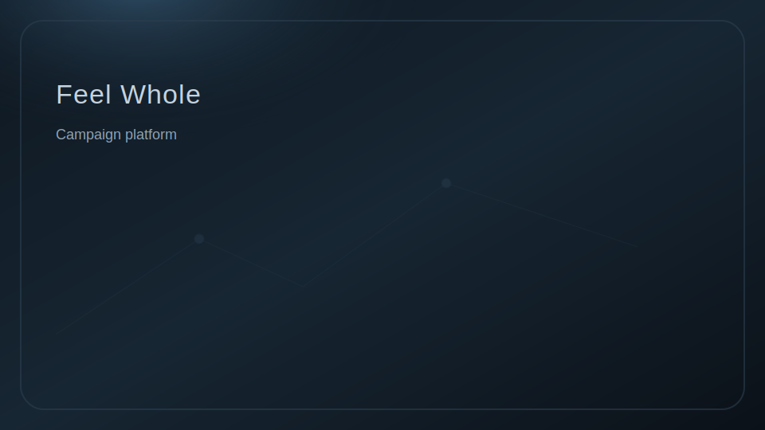
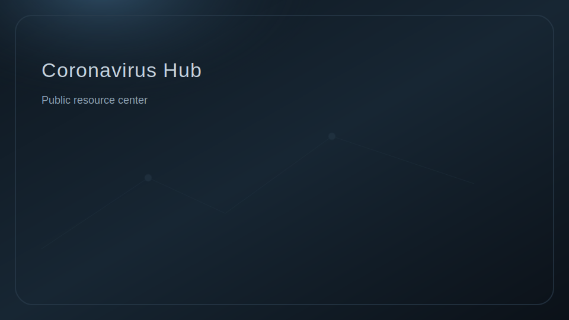
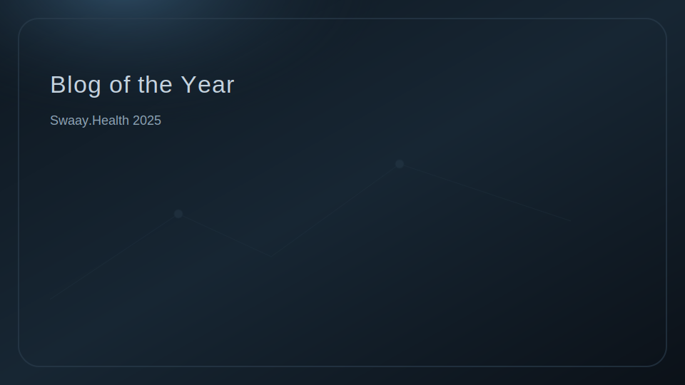
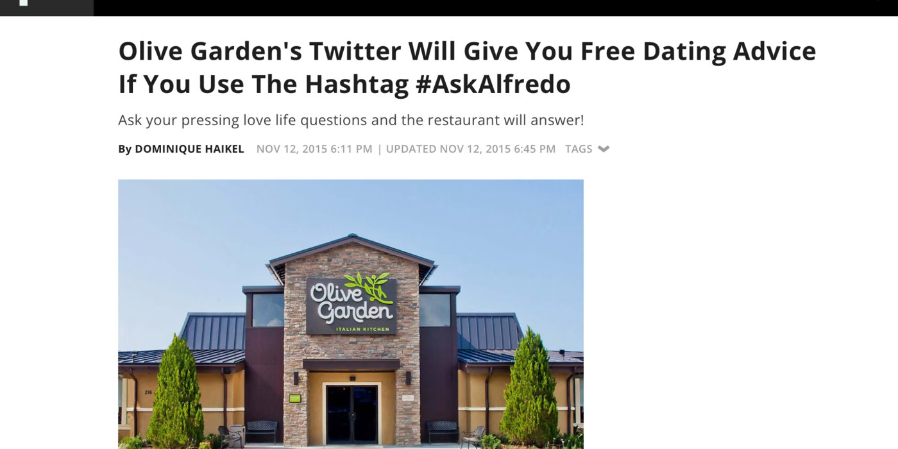
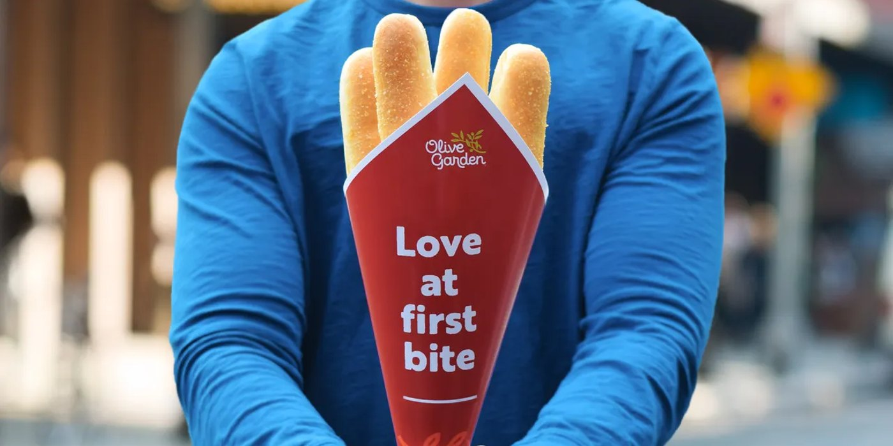

Orlando, FL Remote-first
John Katez
Senior Manager, Social Media & Content Strategy
Enterprise content governance • Omnichannel storytelling • Performance optimization.
10+ yrssocial + content leadership
Global governanceScaled profile + process standards
37.5%LinkedIn engagement rate (highlight)
CCOE leadershipContent Center of Excellence
10K+interactions on a single post (highlight)
Award submissionsWebby / Anthem / MarCom
67K+YouTube views (highlight)
Enterprise enablementNewsrooms + Lunch & Learns
Wins + highlights
Click a highlight for details. Press Escape to close.
Best work library

Feel Whole campaign platform
Brand platform storytelling and campaign hub.

Coronavirus Resource Hub
Central public guidance and FAQs.

Blog of the Year
Swaay.Health 2025 award recognition.

#AskAlfredo
Earned media Q&A format with high engagement.

Breadstick Bouquets
Seasonal, visual-first brand moment.
Darden × Uber Direct
Partnership narrative and rollout messaging.
One‑minute overview
Senior social + content strategy leader driving enterprise governance, executive storytelling, and measurable performance across social, blog, and multimedia.
Featured social wins
Public highlights across LinkedIn, YouTube, Instagram, and X.